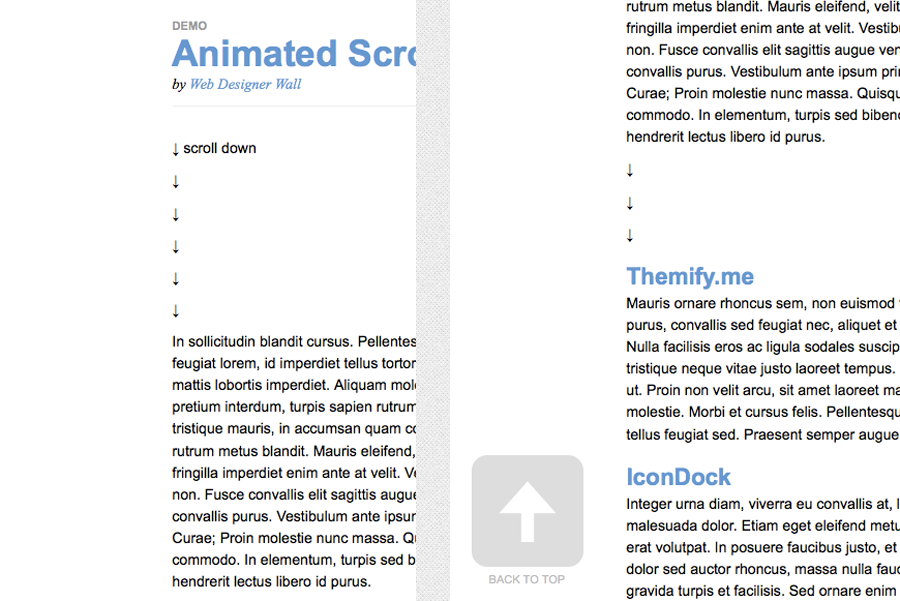

我一直笃信不知道HTML和CSS的体验设计师是连砖头和钢筋都没有摸过的建筑师，因此在以往的十几个项目里虽然总是进行策略层的设计，但也不忘记锻炼自己HTML和CSS能力，只有手够脏才能成为一位好的设计师。
最近的讨论里，我们总在纠结于设计师和开发人员无法相处的话题，其实答案很简单──当你没有我的生活体验，你如何让我理解你。在开发人员那个充满逻辑、过程、抽象、定义的世界里，到底哪个部分是曾涉足，决定了你是不是一个足够理解开发人员的设计师。
于是，我尝试用一个设计师的语言讲前端技术──计算机是如何将你的设计转化成计算机语言的。
设计会转化成计算机能懂的各种元素
你在用Photoshop制作界面时，会使用层的概念给例如输入框、按钮、下拉等元素进行分拆，这些存在于PSD文档中的元素到了浏览器那里，会被前端工程师变成一个个标准的元素，这些元素的组合就形成了DOM结构（Document Object Model），浏览器通过读取DOM结构生成最后的页面。
HTML负责骨架CSS负责装饰
这些元素的定义由HTML完成，长什么样子，由CSS完成，下面这个例子里，没有经过CSS修饰的DOM结构只剩下HTML构成的“骨架”，而加上CSS修饰以后就会变成设计师想要的效果。
你的设计就是这样被使用HTML和CSS变成一个浏览器可以读取的页面的，如果你注意到上面的下拉菜单，作为一个设计师你可能不喜欢这种风格，想变成下面这样的风格：
这就会使CSS渲染很麻烦，因为CSS的原料只有那么多种布料和装饰，你设计的东西超过了CSS能够提供的效果，就会增加开发过程。但随着前端技术的发展，也不是完全不可能，可是浏览器又拖了后腿，各个版本和“品牌”支持的CSS渲染效果都不一样，他们要花大量的时间让它们所有的表现保持一致，你倒是很轻松的使用你mac上的PS做效果。你知道为啥你的程序员背后抱怨你了吗？
JavaScript帮助你可以更加丰富地操作这些元素
这样你就可以生成一个静态的页面了，在以前，这就足够了，通过一个静态页面就可以跟后台进行交互；但现在，前端的交互行为越来越丰富，很多交互都放在前台进行，而不需要到后台去。
这就像你买个包子，你问服务员有没有白菜的，服务员直接告诉你没有，她不用跑到厨房去问厨师。前台交互当然不像买包子这样简单，有很多细节的交互行为都是由JavaScript完成──这就是JavaScript的意义──它帮助你更好地操作这些元素，根据需要改变他们的样式、位置、内容、以及增删。
下面这个例子是一个常见的回到页首交互细节，整个交互过程（在线演示在这里）是：
- 在第一页下拉；
- 慢慢浮现出一个按钮；
- 点击按钮回到页首；
- 按钮慢慢消失。

这个交互就不是HTML和CSS能够完成的了，当然也不是Photoshop能完成的，细致的设计师会在文档里写清楚这个部分的交互行为，或者使用Axure做一个原型，但是如果掌握一点点前端技术，你完全可以把这个效果写出来，前端代码是与程序员沟通最天然的工具，同时在Agile UX的环境里我们鼓励设计师和前端开发人员结对，一起把这个交互效果表达出来。
在以前，学习这些知识确实很难，但是前端技术的发展使得我们现在可以只掌握一些基础就能写出流畅的前端代码，这就是各种前端框架的兴起，比如HTML和CSS的Less、960.gs等，JavaScript里的jQuery、YUI、Prototype，此外，有越来越多整合的框架将HTML、CSS和JavaScript整合在一起，使设计师可以轻松的使用制作高保真原型，例如Twitter推出的Bootstrap以及Zurb的Foundation。
这些框架的存在就是把一些前端交互的现有模式用代码包装起来，就跟你在包子店点包子要3号套餐一样，不需要再跟人说要什么馅喝什么粥，就说“3号”搞定。这些模式包括：弹出对话框（Dialog）、标签页（Tabs）、下拉（Dropdown）、表单（Forms）、提醒（Tooltips）、警告（Alert）、翻滚（Scroll）、收放（Collapse）、走马灯（Carousel）、按钮（Button）、自动补全（Auto Complete）等等，你只需要写一点点代码就可以叫到包子，对不起，完成一个交互场景的设计。
学习一点点jQuery
jQuery是很多框架的JavaScript基础框架，比如Bootstrap的JavaScript语法和jQuery基本一致，学习一点点jQuery基础帮助你更好地使用这些。
你需要理解三种基本类型的jQuery元素，对象（objective）、事件（event）、和方法（method），三种元素的关系是：
找到某个对象，当发生特定事件时，找到对自己或另一个元素做某个方法；
在这两个场景中，都要找对象、判定某个特定事件、做方法；那么我们来看看如何分别做这三件事：
找到一个对象的格式为$("objective")，括号里面可以是document也可以是DOM结构中某一个指定的元素。例如当定义$(document)时指未来操作的对象是整个文档；当定义$("#division")时指未来操作的对象是一个ID叫作division的元素；当定义$(this)时指未来操作的对象就是当前操作的对象。
某个特定事件的格式为event(function(){})，这里的xxx可以是点击（click）、加载完毕（ready）、鼠标悬浮（hover）等等，大括号里将填入的是要对自己或另一个元素做的方法；和之前找到对象结合起来就变成：$(document).ready(function(){......})，意思是当文档加载完毕后执行......。
再看执行某个方法，对某个元素执行方法的格式为.method(......)，根据方法的不同，括号里的参数格式不同。比如说要表达添加一个新的class名可以写成
.addClass("newClassName")；
和之前两个动作结合起来就变成：
$(document).ready(
function(){$("#").addClass("newClassName")}
);
意思是当文档准备好时，找到一个id叫division的元素，给它加一个class名。
还可以使这个过程变得更复杂，例如下面的代码：
$(document).ready(
function(){
$("button#hello").click(
function(){$("body").append("Hello!")}
)
)
这个的意思是，当文档准备好时，找到一个id叫hello的按钮元素，并当点击这个元素的时候，在body下添加一个Hello!的字样。
jQuery中一些有用的方法和事件
在完成高保真原型时，我们大部分情况需要的交互行为往往是：点击/悬停一个页面元素，关闭/打开/弹出/改变另一个元素样式/改变内容等等。只需要掌握jQuery中基础的两个触发事件click()和hover()，以及addClass()、removeClass()、show()、hide()、append()、text()、attr()六个基础方法，就可以搭配jQuery已有框架完成各种交互特效。
我们来尝试完成一个点击某个按钮出现一个隐藏图层的代码：
首先写HTML，我们需要一个按钮和一个隐藏的文字域：
<button type="button" id="open" class="btn btn-blue" style="color:#FFF">点我</button>
<textarea id="textpad" style="display: none;"></textarea></pre>
这里省略了CSS渲染的过程，我们来写一段点击按钮打开文字域的代码，先不着急写代码，先想想我们要做什么，我们要做下面几件事情：
- 等待文档读取完毕；
- 寻找到这个按钮；
- 点击它；
- 找到这个隐藏的文字域；
- 把它显示出来；
于是我们开始写程序，第一步等待文档读取完毕：
$(document).ready(function(){})
第二步寻找这个按钮：
$(document).ready(function(){
$("#open")
}
)
第三步点击它：
$(document).ready(function(){
$(#open).click(function(){})
}
)
第四步找到目标的那个隐藏文字域：
$(document).ready(function(){
$("#open").click(function(){
$("#textpad")
})
}
)
第五步将它显示出来：
$(document).ready(function(){
$("#open").click(function(){
$("#textpad").show();
})
}
)
jQuery提供了很多特效的控件帮助你在细节上设计你的交互行为，比如在代码中加入fadeIn()：
$(document).ready(function(){
$("#open").click(function(){
$("#textpad").fadeIn("slow");
})
}
)
最后的效果为：
jQuery以及其他一些框架拥有大量的行为效果插件，可以通过阅读API来了解各种方法的使用规则，基本思路跟上面这个简单的例子是一致的。
你需要做什么
前端技术是交互设计之外一门相当精深的领域，不可能通过一篇简单的博客就能覆盖到全部，这篇博客的目的是至少当你有机会和前端开发人员一起合作的时候，适当一点前端技术知识可以帮助你更好的与前端开发人员进行沟通。
很多交互细节不是文字或图片能够解释清楚的，虽然使用Axure可以或多或少解决这个问题，但是Axure的存在有时阻碍了和开发人员的沟通，因为这不是个两种角色都能使用的技能，那么既然现在的前端技术已经大大发展，为何不尝试学习一些前端技术，将自己的想法用代码的形式表现出来。
这只是抛砖引玉的文章，希望越来越多的交互设计师能够花一些时间学习一些前端技术，下面提供的链接是一些我经常使用的框架和工具。
前端框架
jQuery - 流行框架也是博客使用的框架；
Bootstrap - Twitter出品的框架，包含精美的整套UI解决方面，全面支持Less，各种交互模式插件完整；
Foundation - Zurb出品的前端框架，各种交互控件完整，UI不如Bootstrap精细；
1140 Css Grid - 配合Responsive Design的CSS框架，优于960.gs；
实用工具
JSFiddle - 很好用的在线HTML+CSS+JS编辑器，支持jQuery和Bootstrap框架； Pears - 很好用的基础交互模式HTML和CSS模板。